Je me présente : Zozor, mascotte du Site du Zéro. :) Bienvenue sur le manuel du Zéro !
En effet, ce tutoriel s'apparente davantage à un guide ou à un manuel qu'à un cours. Le Site du Zéro est très vaste et parfois les Zéros en connaissent mal les possibilités, c'est pourquoi j'ai eu l'idée de vous guider grâce à un cours, pour vous apprendre à maîtriser le site. Voici trois raisons qui justifient ce guide :
les nouveaux Zéros pourront de cette manière maîtriser beaucoup plus rapidement le Site du Zéro, et améliorer leur navigation ;
le SdZ regorge de fonctionnalités diverses et variées, qui méritent d'être approfondies ;
enfin, de nouvelles options sont fréquemment ajoutées ; le but de ce tutoriel est donc d'être le plus souvent à jour possible.
Avant de vous souhaiter une bonne lecture, je précise que ce guide se veut être le plus dynamique possible. Si vous voulez participer à sa rédaction, signaler des erreurs ou proposer des corrections, n'hésitez pas à envoyer un MP aux auteurs (voir la conclusion) !
Très bonne lecture à tous ! :)
Merci à toutes les personnes ayant aidé à l'élaboration et à la correction de ce tutoriel.
Merci à toutes les personnes ayant aidé à l'élaboration et à la correction de ce tutoriel.
C'est le premier chapitre de ce tutoriel. La première chose que vous voyez, dont vous allez vous servir, c'est… l'interface du Site du Zéro, évidemment ! :D
Une interface, c'est tout simplement un espace graphique qui vous permet d'accéder à plein d'informations et de fonctions. Il est donc primordial de savoir se repérer dans cette interface, mais vous verrez que c'est intuitif ! ;)
Bien sûr, nous ne nous limiterons pas à la simple description de l'interface, nous irons plus loin en détaillant les différentes actions possibles, accessibles depuis n'importe quel endroit du site par exemple.
La speedbarre, comme son nom l'indique, vous permet d'accéder rapidement aux sections les plus importantes du site. Elle est divisée en deux parties : la gauche, qui correspond à une partie publique du site et la droite, qui varie en fonction de votre statut. :)
Qu'est-ce qu'un statut ?
Il existe grosso-modo 3 statuts différents pour un visiteur du SdZ :
visiteur, ou anonyme ;
membre enregistré ;
membre de l'équipe du site.
Nous y reviendrons dans le quatrième chapitre de cette sous-partie. Les deux plus courants sont les deux premiers, nous laisserons de côté le dernier puisqu'il ne concerne qu'une minorité.
Si vous êtes un visiteur, voici votre speedbarre :
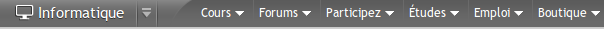
Speedbarre d'un visiteur
Les membres disposent de cette speedbarre :
Speedbarre d'un membre enregistré
Partie gauche
Informatique
Ce lien est en fait une liste déroulante. Il vous donne le choix entre deux liens :
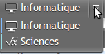
Le premier (Informatique) vous redirigera sur la page d'accueil du Site du ZérO informatique alors que le second (Sciences) vous amènera sur la partie scientifique du site (avec des cours de mathématiques, de chimie etc.).
Cours
Direction : tous les cours du Site du Zéro, classés par catégories.
Forums
Vous accédez à la liste des forums, classés par thèmes. Pour plus d'informations sur les forums du site, rendez-vous dans la partie qui leur est dédiée.
Participez
C'est la section « communautaire » du site. Vous pouvez éditer des news et participer aux concours.
Études
Le section études est là pour vous informer sur des formations, ou d'informer d'autres Zéros à travers vos connaissances et expériences.
Emploi
Cette section est là pour ceux qui désirent trouver un emploi dans le domaine de l'informatique. Elle recensera plusieurs dizaines d'offres d'emplois un peu partout en France.
Boutique
Le site dispose d'une boutique ! N'hésitez pas à aller y faire un tour. Vous retrouverez certains tutoriels officiels publiés en livre ou encore des clés USB, et même des peluches !
La partie droite
Pour les visiteurs
Elle comporte alors deux liens : l'un pour s'inscrire sur le site, le second pour se connecter à leur compte utilisateur s'ils sont déjà inscrits.
Pour les membres
Ceux qui sont connectés à leur compte utilisateur voient d'une part s'ils ont reçu des Messages Personnels (dont nous reparlerons dans la seconde partie du tuto), et peuvent d'autre part se déconnecter en cliquant sur le bouton
Liste des cours anciennement appelés « officiels ». Ce sont ceux rédigés par M@teo21 ainsi que certains membres.
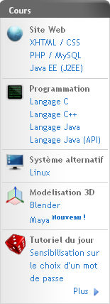
Les amis
Ce menu apparaît uniquement lorsque vous êtes inscrits sur le site. Si vous êtes inscrits, vous avez ce qui s'appelle une friendlist, c'est-à-dire une liste d'amis. Pour ajouter un ami, vous devez aller dans le profil du membre qui vous intéresse et cliquer tout simplement sur « L'ajouter comme ami ». Ainsi, un Message Personnel sera automatiquement envoyé au membre concerné pour lui demander s'il accepte de devenir votre ami. Ensuite, quand il sera en ligne, vous le verrez dans ce menu (s'il a accepté votre demande, bien entendu :p ) . Sans pointer la souris sur le menu vous voyez ceci:
À l'heure ou j'écris ces lignes, il n'y a qu'un objet en vente : le premier Livre du Zéro qui, comme l'espère tout le monde, deviendra une collection de livres !
Et nous arrivons au dernier menu : celui des interventions.
Mes interventions
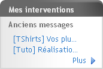
Comme vous l'avez remarqué, le menu est très chargé. Mais grâce à lui vous pouvez effectuer toutes les actions principales sur le site, en plus de celles proposées dans la speedbarre.
Il nous reste une partie à étudier : le pied de page.
Je vais vous expliquer pas à pas à quoi correspondent toutes ces informations.
Liens : grâce à eux, vous pourrez apprendre pas mal de choses, notamment à contacter les administrateurs du site.
C'est quoi Simple IT ?
C'est la boîte créée par M@teo21 et karamilo (cliquez ici pour plus d'informations)
XiTi : pour ceux qui ne le savent pas, XiTi est un site internet très intéressant. En effet, il vous offre des statistiques gratuites (pour l'offre de base) très détaillées. Mais pour cela, il faut insérer un script sur la page, et c'est ce qui est fait ici. :)
Je ne vais pas tout décrire. Facebook : le Site du Zéro est sur Facebook. Twitter : le SdZ est sur Twitter. Flux RSS : ce sont les actualités générées en PHP.
Perdu sur le Site du Zéro ? Le fil d'Ariane et le plan du site viennent à votre rescousse ! ^^
Le SdZ est organisé très savamment : des catégories contiennent des sous-catégories qui contiennent des sous-sous-catégories qui contiennent des sous-sous-sous-catégories qui contiennent… Enfin, bref, vous avez compris. :p
Le plan du site
Le plan du site vous permet de visualiser d'un coup d'œil cette hiérarchisation. Vous pouvez comprendre très vite de quelle manière se structure le SdZ.
De cette manière, les recoins de ce site n'auront plus de secrets pour vous. ;)
Le fil d'Ariane
Le fil d'Ariane
C'est qui Ariane, d'abord ? o_O
Wikipedia vous conte cette légende vieille comme le monde.
Tout en haut du corps de page, il vous montre dans quelle section vous vous trouvez, en vous situant dans le plan. Plus vous allez vers la droite, plus la catégorie est précise.
De cette manière, vous êtes parés pour explorer le site de fond en comble. :pirate:
Eh bien, nous voilà arrivés au point le plus important, le contenu ! :D
Cette partie, généralement dotée d'un titre, peut aussi bien contenir la liste des sujets d'un forum qu'un tutoriel, un formulaire d'édition de messages, une page statique, etc. Le plus intéressant, en quelque sorte, pour le plaisir de vos zYeux. ^^
Avouez que ce n'était pas bien dur ! :)
Il manque cependant encore quelques petits détails, notamment concernant les messages d'erreurs, et autres joyeusetés. ^^
Le Site du Zéro a mis en place quelques systèmes vous permettant de mieux interagir avec lui. :)
Par exemple, certains messages vous avertiront d'actions que vous n'avez pas le droit de faire ou, au contraire, vous confirmeront que ce que vous venez d'effectuer l'a bien été. ;) Ces messages ont une forme consacrée, tout à fait caractéristique.
Lorsque vous effectuez une action sur le Site du Zéro, ce dernier a la bonté de vous annoncer si cette dernière a abouti ou non. ^^
Feu vert
Par exemple :
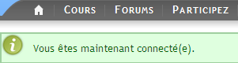
Message d'information
Vous constatez qu'un texte d'une agréable couleur verte vous répond que vous avez réussi à vous connecter, ce qui est une grande satisfaction, avouons-le. :p
Feu rouge
Par exemple :
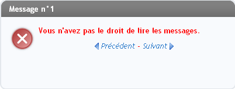
Message d'erreur
Ah ! Déception, un texte rouge vous apprend que vous n'avez pas le droit d'accéder à cette page. Mais vous croyiez que c'était aussi simple que ça d'accéder à la zone Admin ? :-°
Vous avez alors le choix entre la page précédente ou la suivante, en fonction de vos désirs.
Certaines erreurs sont « fatales » ( :( ), c'est-à-dire qu'elles ne peuvent pas être indiquées comme les autres, car elles ne sont pas directement liées à la navigation dans le site. Ces erreurs prennent la forme suivante :
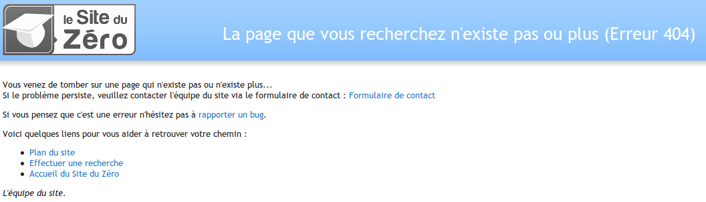
Erreur 404
Une autre page d'erreur assez fréquente, la page de maintenance :
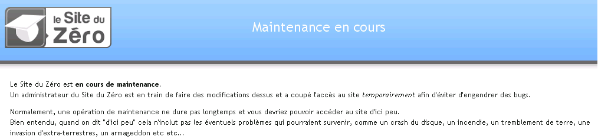
Le site est en cours de maintenance
Enfin, l'erreur la plus redoutée par tous les Zéros :p :
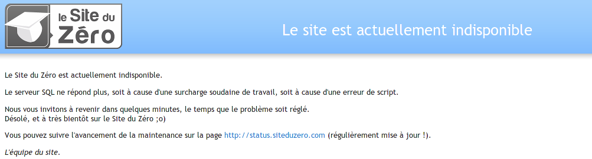
Le site est « down » Notez que cette erreur dure rarement longtemps. En effet, si vous actualisez votre page quelques minutes après son apparition, le site sera la plupart du temps à nouveau accessible. ;)
Eh oui, la vie des Zéros est pleine de péripéties palpitantes ! ^^
Hop hop hop, on enchaîne ! :) Finie la présentation de l'interface, passons à la page d'accueil. ;)
Le texte introductif, c'est le texte qui apparaît sur la page d'accueil et qui présente le SdZ. Son but est de vous donner une idée simplifiée de ce qu'est le site. Voyez par vous-mêmes !
Comme vous le voyez, il présente rapidement le SdZ.
Les modules ! Voici des options très pratiques ! Vous les avez déjà vus ; ce sont en fait les cadres qui apparaissent juste sous le texte introductif :
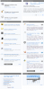Cliquez pour agrandir Ils vous donnent quelques informations sur l'actualité du SdZ et sur les différents évènements informatiques. ;)
Bref aperçu
Dans la rubrique « Que propose le Site du Zéro ? » vous trouvez des raccourcis pour ne pas vous perdre.
À la une
Ici, vous trouverez la dernière news, le dernier « message », le tutoriel du jour, le dernier tutoriel, et deux formations sous forme d'une diapositive. Vous pouvez l'arrêter avec le bouton
, et la remettre en route avec le bouton
.
Derniers tutoriels
Ici vous voyez les 8 derniers tutoriels. Lorsque vous n'êtes qu'un visiteur, vous avez la liste et un bouton « Plus ». Par contre lorsque vous êtes inscrits, en plus vous avez un bouton « Rédiger un tuto ».
Les derniers tutoriels
Le troisième cadre dresse une liste des 5 derniers tutoriels parus sur le site.
À noter, le tutoriel « Coup de coeur » ne fait pas forcément partie des tutoriels parus en dernier, c'est simplement un tuto que les Validateurs (membres du site chargés de lire et d'accepter ou de refuser la diffusion de tutoriels rédigés par les membres) souhaitent mettre en valeur parce qu'ils l'estiment de très bonne qualité.
Qui sont les Validateurs, exactement ? Je n'ai pas trop compris.
Ce sont des membres du SdZ qui sont « embauchés » (bénévolement) pour lire les tutoriels rédigés par les Zéros et leur dire quels en sont les défauts. Ils doivent aussi refuser ou accepter (plus souvent refuser, d'ailleurs :-° ) la diffusion des tutoriels.
Nous parlerons des membres de l'équipe plus tard dans ce tutoriel. ;)
Les dernières news
Le deuxième cadre est très pratique (et même indispensable). C'est une liste des dernières news parues sur le site. Bien sûr, cette liste est en fait une liste d'ancres vers les news de la page. Ainsi, en cliquant sur un titre, vous arrivez systématiquement au début de la news concernée. :)
C'est très simple, passons donc à la suite (d'autant qu'une sous-partie complète est réservée aux news ;) ).
Les sondages
Pour finir, le dernier module. C'est le module « sondage ». Il permet aux administrateurs de poser des questions à un maximum de Zéros à la fois. Ils sont très faciles à utiliser, vous verrez. ;)
Pour pouvoir voir les résultats du vote, vous devez vous-même voter. Si vous n'êtes d'accord avec aucune des réponses proposées mais que vous souhaitez quand même voir les résultats ou voter, vous pouvez votez blanc en cliquant sur le bouton
.
Comment ça, il n'est pas blanc, mon bouton ? :p
Attention, cependant. Vous ne pouvez pas modifier votre vote une fois qu'il est validé.
Le calendrier
Le dernier cadre (nommé « Évènements ») est un calendrier (j'espère que vous vous en étiez aperçus, sinon, je peux vous recommander un très bon ophtalmo :-° ).
Seulement, en plus de donner la date, il permet d'afficher des évènements en tous genres, configurés par les membres de l'équipe du site. D'ailleurs, les jours correspondant à un évènement sont colorés différemment (la couleur dépend de votre design). Au passage de la souris, une infobulle s'affiche dans laquelle l'évènement est décrit.
Exemple en image :
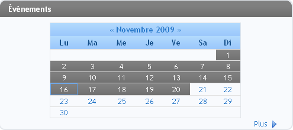
Les évènements sont en violet et la souris ne pointe vers aucun évènement
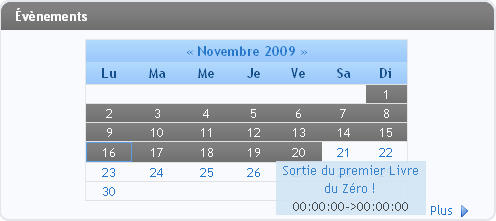
La souris pointe vers un évènement
Ces évènements traitent la plupart du temps d'actualités informatiques ou de l'actualité du site (soirées jeux, par exemple).
Bref, c'est assez simple, je pense que plus d'explications seraient de trop. ;)
En cadeau bonus, quand même : comment créer vos propres évènements. Ce sont des évènements qui n'apparaissent que sur votre calendrier à vous.
Pour créer un évènement, cliquez sur « Plus ». Ensuite, cliquez sur « Ajouter un évènement ». Pour le reste, c'est très facile, remplissez le formulaire. Simple comme bonjour ! :)
Les news ! Vous en avez sans doute déjà vu quelque part sur le Web. ^^
Ce sont des textes rédigés par les Newsers du SdZ (ou par des membres du site) qui vous informent de l'actualité informatique dans divers domaines.
Cependant, contrairement à d'autres sites, les news du SdZ ne présentent pas toujours des faits très récents. C'est-à-dire que si vous surfez sur des sites d'actualités informatiques, vous aurez souvent déjà entendu parler des nouveautés relatées dans les news du SdZ. En effet, les Newsers passent un certain temps à rédiger leurs news, car ils préfèrent les diffuser « à la sauce SiteduZéro », c'est-à-dire qu'en plus de rapporter les actualités, les news donnent quelques détails supplémentaires sur le contexte, par exemple. ;) Mais depuis peu, ce ne sont pas seulement les Newsers qui les éditent mais tous les membres !
Hein ? Comment ca ?
C'est ce que l'on appelle les « News Communautaires » (NC). Les membres peuvent éditer et voter pour des news, mais nous verrons cela plus tard !
Différentes catégories de news
Pour plus de clarté, les news du SdZ sont classées par catégories.
Hardware ;
Logiciel ;
Programmation ;
Projets des Zéros (abrégé PdZ) : ce sont des news un peu spéciales, qui présentent des projets informatiques des membres du site. Et je peux vous jurer qu'apparaître en page d'accueil du SdZ, ça aide à faire progresser votre travail ! ;)
Site du Zéro : en général, ce sont des admins (ou des membres de l'équipe du site) qui rédigent ces news. Elles vous parlent de l'actualité du SdZ ;
Web ;
Tutos : toute l'actualité des tutoriels du SdZ ;
Autres : pour les inclassables. :p
Concours : pour toute l'actu des concours sur le SdZ.
Rédiger vos news
Les Newsers ne sont pas les seuls à pouvoir rédiger des news ! Les membres aussi le peuvent ! :)
Nous verrons un peu plus tard comment faire, à la fin de la seconde partie.
Commenter les news
Après avoir lu une news, il est possible de la commenter, c'est-à-dire que vous pouvez réagir à la news. Vous pouvez, par exemple, dire ce que vous en avez pensé ou bien demander que l'on vous ré-explique certains points qui sont encore obscurs pour vous.
Commenter une news pour la première fois
Si vous souhaitez réagir à une news que vous n'avez pas encore commentée, cliquez sur le nombre de commentaires déjà postés par les membres (entouré en rouge sur l'image ci-dessous).
Ensuite, lisez ceux déjà postés pour éviter de répéter ce qui a déjà été dit et cliquez sur le bouton
. À moins d'un problème, vous devriez arriver sur un formulaire avec plein de boutons partout. Surtout, pas de panique ! :lol:
C'est le formulaire de réponse, les boutons servent à mettre en forme votre message. Nous verrons cela en détail dans le chapitre 6 de ce tutoriel.
Une fois votre commentaire rédigé, cliquez simplement sur le bouton envoyer.
Commenter une news qu'on a déjà commentée
Si vous avez déjà posté un commentaire pour une news et que vous souhaitez en poster un autre, la bulle avec le nombre de commentaires se colore en bleu. Vous n'avez qu'à cliquer dessus, lire les commentaires, puis écrire le vôtre ! Si vous cliquez dessus, vous arrivez immédiatement au dernier commentaire que vous avez lu. Ainsi, vous ne perdez pas de temps à tout relire ou à chercher à partir de quel commentaire commencer à lire.
Une fois la lecture terminée, la procédure pour répondre est la même que celle mentionnée précédemment. ;)
Maintenant que vous avez découvert en détail la page d'accueil du site, nous allons voir entre autres comment changer de design. :)
Vous êtes maintenant familiers avec la page d'accueil du site ?
Alors, continuons sur notre lancée ! :) Voici un chapitre sur ce que l'on appelle les pages statiques. C'est un terme un peu technique pour désigner des pages dont le contenu change rarement. Par exemple, une page de forum est dynamique, car les informations affichées changent très souvent (parfois plusieurs fois par minute !). D'autres sont statiques : leur contenu reste plus ou moins le même. Comme des mentions légales ou l'historique du site.
Comme tout site qui se respecte, le SdZ met à votre disposition un livre d'or. ;)
Mmh ! C'est quoi, un livre d'or ?
C'est une page d'un site sur laquelle vous pouvez laisser un message au(x) webmaster(s). C'est une sorte de livre (logique :p ) virtuel dans lequel des visiteurs donnent leur opinion sur le site qu'ils visitent.
Signer le livre d'or
Contrairement à d'autres endroits sur le site (les forums, par exemple), vous pouvez signer le livre d'or même si vous n'êtes pas membre. :) Pour ce faire, cliquez sur ce lien.
Ensuite, il y a deux cas : soit vous êtes connectés au site en tant que membre, soit vous n'êtes pas connectés. Si vous l'êtes, vous n'avez qu'à écrire votre message, copier les lettres et les chiffres qui apparaissent dans l'image et cliquer sur le bouton envoyer (cf l'image ci-dessous ;) ).
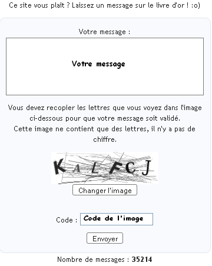
Si vous n'êtes pas connectés en tant que membre, c'est la même chose, sauf que vous devez entrer un pseudo juste au dessus du champ où vous devez écrire le contenu de votre message.
Lire les messages des autres visiteurs
Pour ça, rien de bien compliqué. :p Il vous suffit de descendre un peu plus bas que le champ de réponse, et vous pouvez lire tous les messages. ;)
Encore une fonctionnalité indispensable ! Vous avez la possibilité de choisir le design de votre choix parmi une liste proposée. Ainsi, si New Wave (le design par défaut) ne vous plaît pas trop, vous pouvez en changer. :)
Pourquoi les designs des Zéros sont-ils appelés « distants » ?
En fait, les designs non-officiels ne sont pas hébergés sur le SdZ, c'est-à-dire qu'ils ne sont pas stockés sur les serveurs du site. Pour pouvoir utiliser les designs distants, vous devez être membre du site.
La liste de ces designs est accessible ici. En voici un screen :
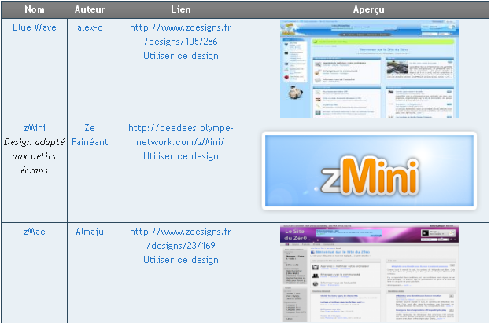
Pour choisir un design distant, rendez-vous sur cette page (ou rendez-vous en bas de la page des designs, puis cliquez sur le lien utiliser un design distant). Vous devez, dans le champ URL du design distant, entrer l'adresse du site sur lequel se trouve le design que vous voulez. Cette adresse est accessible à partir de la liste des designs.
Sur la liste accessible sur le forum, la première colonne indique le nom du design, la deuxième colonne son créateur, la troisième l'adresse où il se trouve (nous en aurons besoin pour le choisir !), et dans la quatrième colonne se trouve une capture d'écran du design. Si vous cliquez sur « Utiliser ce design », vous êtes directement redirigés vers la page de choix d'un design distant avec l'URL où est hébergé le design que vous voulez. Ce n'est peut-être pas très clair… le mieux est que vous testiez par vous-même, pour mieux comprendre. ;) D'ailleurs, j'espère que vous faites ça à chaque fois ! Pour bien comprendre (bien que ce tutoriel soit assez simple), il faut tester au fur et à mesure ce qui peut se passer en fonction de ce que l'on fait.
Depuis le début de ce tutoriel, vous avez souvent relevé des allusions aux membres inscrits sur le site. Qu'est-ce que cela veut dire ? Comment devenir membre du Site du Zéro ?
Nous en profiterons pour parler des différents groupes ou types de membres que l'on y rencontre, ainsi que des sanctions applicables. Eh oui, quand le règlement n'est pas respecté, différentes mesures sont prévues pour conserver la qualité du site. ;)
Être membre, cela veut tout simplement dire que vous souhaitez soutenir le Site du Zéro. Ainsi, vous n'êtes plus seulement un utilisateur anonyme, mais un membre d'une communauté à part entière, celle des Zéros. Vous serez reconnaissables par un pseudonyme, etc. En bref, vous apportez un soutien au site, comme l'ont déjà fait des dizaines de milliers de visiteurs.
En retour, vous aurez davantage de droits sur le site :
vous pourrez participer aux forums ;
vous pourrez commenter les news, les tutoriels ;
vous pourrez établir des relations avec d'autres Zéros ;
vous pourrez rédiger des news, des tutoriels ;
et bien d'autres choses encore !
Bien entendu, ce ne sont pas des obligations, mais vous ne pouvez le faire qu'en vous inscrivant. Cela a un avantage pour la communauté, mais aussi pour vous-mêmes. :)
L'inscription est gratuite et les quelques informations personnelles que vous devrez divulguer ne seront jamais utilisées à des fins malsaines ou malhonnêtes. Si vous n'êtes pas rassurés, regardez la liste de membres inscrits, ceux qui participent aux forums, etc.
Pseudo : c'est un surnom, un pseudonyme, un nom qui vous identifie en tant que membre. Tous les membres en ont un. Vous ne pouvez pas avoir un pseudo déjà existant.
Mot de passe : il sécurise votre compte ; vous seuls connaissez votre mot de passe. Il vous permettra d'accéder à votre compte personnel.
Adresse e-mail : elle ne sera jamais utilisée à des fins publicitaires ou malsaines. Elle permet simplement de vérifier que vous existez. Vous recevrez un mail de confirmation, qui permettra de valider votre inscription.
Enfin, il vous faut entrer un code de vérification, afin de garantir que vous êtes une personne humaine (cela permet d'éviter que des robots s'inscrivent et postent des messages sans queue ni tête sur le site). ^^ C'est une simple mesure de sécurité.
Pour terminer, il faut que vous acceptiez et surtout lisiez le règlement du site, accessible à cette adresse. Cochez la case prévue à cet effet.
Cliquez sur « S'inscrire au Site du Zéro ». Si vous vous êtes trompés dans votre mot de passe, ou bien si votre pseudo est déjà utilisé, un message d'erreur vous le signalera. Dans le cas le plus courant où tout se sera bien passé, vous recevrez un e-mail de confirmation, dans lequel vous suivrez les instructions pour achever votre inscription.
Afin de faire vivre le site tous les jours, de nombreuses personnes y travaillent et reçoivent un grand nombre de coups de fouets dans la Cave du SdZ. Ce sont les membres de l'équipe (aussi appelée « staff » ou « team »).
Ces personnes ont chacune un rôle précis, que nous allons détailler ici.
Ce sont eux qui codent le site et qui recrutent les membres du staff. Ils peuvent aussi cumuler les rôles de modérateur-newser-validateur-développeur.
Notez que M@teo21 est aussi le créateur du SdZ, et a, avec karamilo, fondé la société Simple IT . Vous pouvez aussi remercier Cam, qui a réalisé toute l'interface que vous voyez: le header (l'en-tête), le menu, le footer (le pied de page). Il a aussi été le premier community manager du site. L'actuel CM est Calizero. Voici ce que dit M@teo21 à son sujet :
Citation : M@teo21
Nous souhaitions que le community manager soit vraiment le CM du SdZ. Qu'il connaisse son fonctionnement, son histoire, ses valeurs, ses défauts aussi, et qu'il puisse nous aider à aller plus loin. Le but est vraiment d'améliorer le fonctionnement du site grâce à la présence de quelqu'un en continu et de mieux communiquer ainsi avec les membres et l'équipe.
Il est donc en quelque sorte l'agent de liaison entre les membres et les admins (surtout M@teo21), il organise des concours, met en avant certains points de la vie du site, comme dans les récapitulatifs de semaine ! Je vous laisse le lien de la news parlant de la nomination du CM.
À noter que le statut de développeur n'est pas officiel. Les développeurs sont ceux qui codent, qui créent la partie « physique » du site. Vous les trouverez à cette adresse.
Le rôle des Modérateurs
Vous avez tout intérêt à être bons amis avec les modos, car ils ont tous les droits sur vous ! :diable: En effet, leur rôle est de veiller au respect des règles du SdZ, sur les forums notamment (dont nous parlerons plus tard ). ;)
Afin de maintenir une ambiance sympathique sur les forums, les modérateurs ont des droits que les membres « normaux » n'ont pas, à savoir :
la possibilité de fermer ou de verrouiller un sujet du forum ;
la possibilité de modifier le contenu de n'importe quel message posté sur le forum (on appelle ça « éditer », ou « faire un edit » ) ;
la possibilité de sanctionner les membres ne respectant pas les règles. Nous parlerons plus en détail des sanctions un peu plus tard.
Le rôle des Newsers
Les Newsers ont deux fonctions principales : rédiger des news et valider celles proposées par les Zéros.
Rédiger des news
C'est peut-être bête à dire, mais la fonction principale d'un Newser, c'est de rédiger des news. :p C'est un travail fastidieux qui demande beaucoup de temps. En effet, rechercher des nouveautés (en ce qui concerne le domaine informatique, bien entendu), les transformer en news « publiables » sur le SdZ, corriger les fautes d'orthographe requiert énormément de temps libre et d'énergie. Cependant, le jeu en vaut la chandelle et la récompense est souvent à la hauteur du travail fourni : voir sa production paraître en page d'accueil d'un site comme le SdZ, c'est la classe. :soleil: De plus, la rédaction de news est vraiment intéressante.
Au même titre que les modérateurs, les newsers ont quelqu'un pour gérer l'équipe : Graphox.
Notez quand même que les news ne sont pas rédigées par un Newser seul. Tous les Newsers travaillent ensemble, même si au final, un seul poste la news. ;)
Valider ou refuser les news des membres
En plus de rédiger eux-mêmes des news, les Newsers doivent aussi valider ou refuser les news rédigées par les membres. En effet, les Zéros ont tout à fait la possibilité d'en rédiger eux aussi. :) Entre autres pour soulager les Newsers, il existe un module appelé NC, dans lequel les Zéros travaillent à plusieurs sur une news. Mais le rôle des Newsers reste d'aider les membres dans leur tâche, bien plus difficile qu'elle ne semble l'être.
Nous verrons dans le prochain chapitre comment rédiger des news.
Et en plus...
En plus de rédiger et de valider/refuser les news des membres, les Newsers doivent aussi modérer les commentaires de news. C'est-à-dire s'assurer que les commentaires de news se font dans le respect des règles du SdZ.
En clair, ce sont un peu des modérateurs de news. :p Notez d'ailleurs qu'ils ont aussi le droit de sanctionner les membres.
Le rôle des Validateurs
Les Validateurs ont un rôle-clé dans la bonne marche du SdZ ! En effet, leur rôle est de lire tous les tutoriels proposés par les membres du site et d'accepter ou de refuser leur diffusion. Comme vous l'imaginez, la charge de travail est conséquente.
Bien sûr, si un tutoriel que vous rédigez est refusé, vous serez avertis et les Validateurs vous enverront un MP (par l'intermédiaire de la mascotte du SdZ, j'ai nommé ZoZor ! :D ). Dans ce MP seront expliquées les raisons du refus de votre tuto et quelques conseils pour améliorer sa qualité vous seront donnés. ;) Tout comme les modérateurs et newsers, ils ont un chef d'équipe, dans leur cas c'est Thunderseb.
S'il est accepté (ça arrive quand même parfois :p ), vous recevrez aussi un MP de ZoZor vous en informant.
De plus, les Validateurs sont les modérateurs des commentaires de tutoriels (eh oui, il est possible de commenter les tutos ^^ ).
Les Anciens
Ce sont les anciens Zéros ayant fait partie de l'équipe. Pour plus de précision sur le statut des Anciens: ils ont accès aux DG de l'équipe et aux messages dans les topics de tous les membres. Pour les retardataires :p :
Citation
Les DG de l'équipe, ce sont les DG auxquelles seuls les membres de l'équipe ont accès pour spammer parler entre eux.
Enfin, des Zéros comme vous et moi
Ce sont les membres les plus nombreux. Ils ont pour unique devoir de passer du bon temps sur le SdZ et de participer autant qu'ils le veulent à la vie du site. :)
Si vous voulez vous servir de votre compte personnel, vous devez vous connecter au site afin de signaler votre présence.
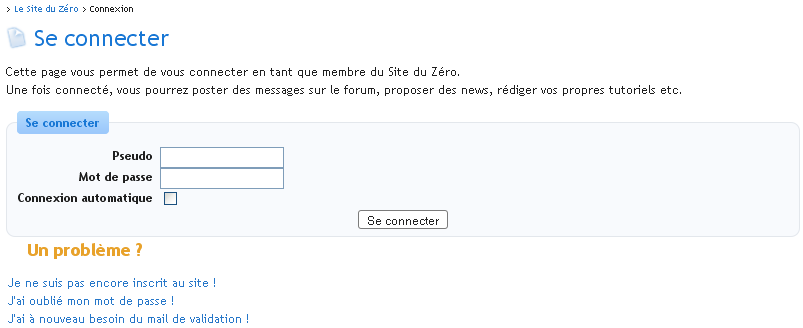
Se connecter
Remplissez les champs à l'aide des informations que vous avez renseignées lors de votre inscription. La case « Connexion automatique » permet au Site du Zéro de vous reconnaitre automatiquement. Vous n'aurez alors plus à vous reconnecter à chaque fois que vous retournez sur le Site du Zéro.
Enfin, notez les trois liens qui subviennent à vos besoins en cas de problème (inscription, perte du mot de passe, mail de validation).
Cliquez sur « Se connecter » pour accéder au site.
Déconnexion
Le lien « Déconnexion » sous forme d'un bouton comme celui-ci
s'affiche dans la speedbarre, tout en haut à droite. Il suffit de cliquer dessus pour se déconnecter.
Si vous ne respectez pas les règles du site, des sanctions peuvent être prises à votre encontre. Seuls les membres de l'équipe peuvent donner des sanctions.
Elles sont plus ou moins conséquentes en fonction de ce que vous avez fait de mal. Elles peuvent être les suivantes, de la moins sévère à la plus sévère.
Un simple avertissement : dans ce cas, un membre de l'équipe vous dira simplement de surveiller votre comportement sur le site. C'est une sorte de première chance. ;)
Les pourcentages : ce sont des sanctions appliquées en cas d'« infraction » peu grave. À chaque Zéro est attribué un compteur allant de 0% à 100%. Lorsqu'un membre de l'équipe veut sanctionner un autre membre, il peut incrémenter ce compteur. Voici un exemple de message que l'on reçoit lors d'une augmentation de pourcentage :
Cela n'influe pas sur votre navigation sur le site, mais si vous avez un pourcentage trop important, l'équipe (les modérateurs, notamment) peut décider d'appliquer des sanctions plus graves. Celles que je vais vous expliquer dans deux secondes, par exemple. :-°
Ce système permet aussi aux membres de la team de connaître les antécédents de chaque Zéro, afin d'avoir une idée de son comportement général sur le site. :)
La lecture seule : si cette sanction est adoptée contre vous, vous ne pourrez plus poster de messages sur le site (sauf dans les MP). Cette mesure est généralement temporaire, mais peut devenir permanente dans certains cas désespérés. Si la lecture seule est appliquée à quelqu'un, la personne concernée ne fait plus partie du groupe « Membres », mais est affectée au groupe « Interdiction d'écriture ».
Le bannissement : la sanction de la mort. Il en existe deux sortes :
le ban (abréviation de bannissement) de compte auquel cas vous ne pouvez plus vous connecter en tant que membre avec le compte banni ;
le ban d'IP qui vous retire tout pouvoir de visite sur le Site du Zéro, même en tant que simple visiteur.
Ces deux sanctions peuvent être appliquées temporairement ou définitivement, en fonction de la gravité de l'infraction commise. Notez qu'il est assez très rare de se faire bannir, à moins d'avoir fait exprès de déranger la communauté. ;)
Bien sûr, si le comportement d'un membre sanctionné s'améliore, les sanctions éventuellement attribuées peuvent être diminuées, voire annulées. ;)
Ça ne se voit pas forcément, mais ce chapitre vous ouvre un nombre infini de possibilités. ^^
En effet, en étant membres, vous pouvez participer à la vie du SdZ ! À partir de maintenant, vous allez pouvoir poster dans les forums, échanger des MP (Messages Personnels) avec les autres membres, rédiger des news… bref, que du bonheur. :D
Nous allons maintenant, pour clôturer cette partie d'introduction au Site du Zéro, apprendre à bien utiliser le formulaire de rédaction de texte : la zForm.
Ce chapitre sera pour nous l'occasion d'étudier la zForm, c'est-à-dire la zone de formulaire nécessaire pour écrire n'importe quel type de contenu sur le Site du Zéros, que ce soit un Message Personnel, un post dans un forum, un tuto, etc. Nous verrons aussi comment envoyer des images sur les serveurs du site, et comment les ajouter à vos textes. ;)
C'est le formulaire qu'il faut remplir lorsque vous souhaitez rédiger un texte sur le SdZ (quel que soit ce texte). Une définition un peu plus précise est disponible en annexe de ce tutoriel.
Dans cette partie, nous apprendrons simplement à bien maîtriser son utilisation. En effet, un grand nombre d'options sont utilisables depuis la zForm.
Pour commencer, en voici une capture d'écran :
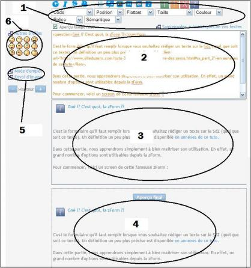
Comme vous le voyez, la zForm est partagée en six parties principales. Voici quelques détails sur ces grandes parties.
Les boutons du zCode. Ils servent à mettre en forme votre message.
Le champ d'action : c'est la zone dans laquelle vous écrivez votre texte. Vous y ajoutez aussi le zCode pour la mise en page.
L'aperçu en temps réel : cette zone est très pratique. :) Elle vous permet de voir au fur et à mesure le rendu final de votre mise en page. En effet, la zone de texte n'est pas en WYSIWYG (c'est-à-dire que vous ne pouvez pas voir directement le résultat final de ce que vous écrivez). Avec l'aperçu en temps réel, vous pouvez voir les polices choisies, les couleurs…
Cependant, l'aperçu en temps réel ne donne qu'un aperçu. Certains rendus peuvent être erronés. C'est normal, cet aperçu ne peut pas parser (traduire) toutes les balises du zCode.
L'aperçu final : c'est un peu comme l'aperçu en temps réel, sauf que cette fois, toutes les balises du zCode sont parsées et vous avez donc un rendu exact de votre texte, contrairement à l'aperçu en temps réel. Cependant, l'aperçu final n'est pas en temps réel. :p Pour l'obtenir, cliquez sur le bouton
.
Ce sont 2 liens vers le mode d'emploi du zCode et vers vos Images zUploadées. L'avantage, c'est que si vous cliquez sur ces liens, le texte que vous rédigez ne sera pas perdu, car ces pages s'ouvrent systématiquement dans de nouvelles fenêtres.
Là, ce sont les smileys du SdZ. En cliquant dessus, vous les intégrez dans vos textes, ce qui permet de les « décorer » un peu, et de les agrémenter en émotions. :p Vous pouvez aussi entrer manuellement les raccourcis vers ces smileys. Si par j'écris par exemple ":)" (sans les guillemets), cela affichera au final le smiley « :) ». Si vous entrez manuellement les raccourcis vers les smileys, vous devrez mettre une espace avant et une espace après, sinon ils ne seront pas parsés (et ne s'afficheront pas correctement).
Voilà : on a fait le tour de cette fameuse zForm. Elle est très utile, et même si elle a l'air assez troublante au début, vous vous familiariserez rapidement avec son utilisation. ;)
Puisque vous savez rédiger un texte avec le zCode, nous allons maintenant voir comment envoyer des images sur les serveurs du site. :)
« zUploads » est le nom donné au module du site qui vous permet d'envoyer des images sur le Site du Zéro. Nous apprendrons tout au long de cette sous-partie comment bien utiliser ce module. Ce que vous allez lire est sans doute la partie la plus compliquée de tout le tutoriel, bien que cela reste très simple. ;) En effet, les nouveaux inscrits ont souvent du mal à s'adapter à la plateforme d'upload.
Bien, passons à la pratique !
Accéder à vos images zUploadées…
… depuis la zForm
Nous avons déjà vu comment accéder à vos zUploads depuis la zForm : il suffit de cliquer sur « Envoi d'images », juste en-dessous de la liste des smileys.
Vous arrivez normalement à une page similaire à celle-ci :
Accueil des zUploads
… depuis votre profil
C'est très simple, encore une fois. Rendez vous dans la rubrique « Sauvegardes » du menu « Mon Compte » et cliquez sur le lien « Mes images » (pour davantage de détails sur le menu « Mon compte », n'hésitez pas à lire la partie 2 ;) ).
Comment sont organisés vos fichiers d'images ?
Une fois sur votre page d'accueil des zUploads, vous devriez voir une liste de liens (avatars, commentaires de News, forums, …), chacun pointant vers le dossier concerné. Ainsi, si vous cliquez sur le dossier « forums », vous verrez tous les sous-dossiers contenus dans ce dossier. Bien sûr, chaque dossier correspond à une section du site, et à chaque fois que vous y enverrez une image, elle sera automatiquement enregistrée dans le dossier correspondant à la section où vous l'envoyez. ;)
Admettons que vous vouliez poster une image sur un forum, et plus précisément sur le topic « Test d'upload d'images » (ce topic n'existe pas, je l'ai inventé pour donner mon exemple :p ). Comme d'habitude, vous ouvrez vos zUploads et envoyez une image sur les serveurs du site (nous saurons faire cela d'ici quelques minutes). Comme vous le savez maintenant, l'image sera stockée dans le dossier « Forum ». Mais afin d'organiser encore mieux toutes les images que vous avez envoyées, un sous-dossier appelé « Test d'upload d'images » sera créé, dans lequel seront enregistrées toutes les images que vous zUploaderez sur le topic « Test d'upload d'images ».
En effet, à chaque fois que vous envoyez une image dans une sous-section du site, elle est enregistrée dans le sous-dossier nom_de_la_section/nom_de_la_sous_section. Par exemple, toutes les images que j'ai envoyées pour illustrer le chapitre que vous êtes en train de lire se trouvent dans le sous-dossier Racine/Tutoriels/La proposition de news. Celles que j'ai envoyées pour rédiger le chapitre « L'interface du site » se trouvent dans le sous dossier Racine/Tutoriels/L'interface du site. Bref, je vais pas vous faire la liste de tous les sous-dossiers des mes zUploads, vous avez compris l'idée. ;)
Maintenant, le moment que vous attendiez tous ( :D ) : envoyer une image !
L'accueil de l'envoi d'images
Bien. Maintenant que nous avons un peu mieux compris comment sont organisés vos fichiers zUploadés, nous allons enfin apprendre à envoyer des images sur les serveurs. :)
Pour commencer, ouvrez vos zUploads depuis la zForm (souvenez-vous que si vous les ouvrez depuis votre compte, vous ne pourrez que regarder les images déjà envoyées, et non en ajouter d'autres). Pour rappel, voici la page sur laquelle vous arrivez (elle varie en fonction de l'endroit du site depuis lequel vous envoyez vos images) :
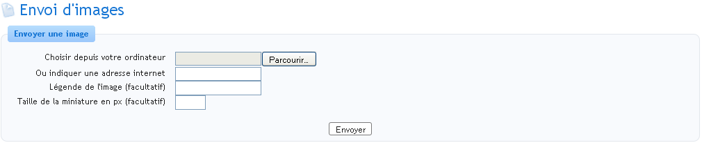
Comme vous le voyez maintenant, la page qui s'ouvre vous envoie directement dans le dossier ou vous vous trouvez (ma capture d'écran a été prise depuis mes MP, je me trouve donc dans le dossier Racine/Messages personnels). La zone qui nous intéresse est bien sûr celle qui se trouve au-dessus de la liste des dossiers, car elle va nous permettre d'envoyer (enfin) des images sur le site. En voici une capture d'écran :
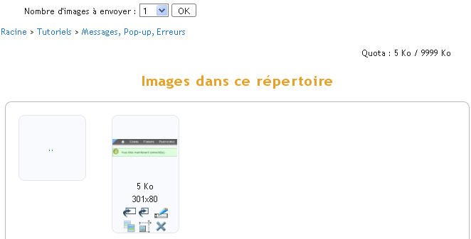
Il existe 2 façons d'envoyer des images sur le Site du Zéro :
depuis votre disque dur ;
depuis un autre site Internet.
zUploader une image depuis votre disque dur
Pour commencer, cliquez sur le bouton parcourir, puis sélectionnez dans la fenêtre qui s'ouvre l'image à envoyer. Vous pouvez aussi entrer manuellement l'emplacement exact de l'image que vous voulez envoyer, mais c'est un peu moins pratique…
Bien entendu, si vous voulez envoyer une image depuis votre disque dur, le champ « Ou indiquez une adresse Internet » doit rester vierge. ;)
zUploader une image depuis un autre site
Dans ce cas, vous n'avez qu'à remplir le champ « Ou indiquez une adresse Internet » avec l'URL exacte de l'image concernée.
Quel que soit l'endroit depuis lequel vous prenez vos images, vous pouvez indiquer une légende pour cette image (dans le champ « Légende de l'image (facultatif) », est-ce utile de le préciser ? :p ). Ainsi, si l'image ne peut être affichée, la légende permet de savoir malgré cela à quoi elle faisait référence. :) Vous pouvez aussi indiquer une taille pour vos miniatures (en pixels), si vous le souhaitez. Nous verrons dans quelques instants ce que sont les miniatures.
Maintenant que vous avez indiqué l'emplacement de votre image, vous n'avez plus qu'à cliquer sur Envoyer. :) Et voilà, vous avez réussi à zUploader des fichiers sur le SdZ ! Il faut maintenant afficher l'image (eh oui, une fois envoyée, elle ne s'affiche pas toute seule).
Voyons tout de suite comment faire.
Insérer une image dans un texte
Bien. Vous savez maintenant envoyer des images sur les serveurs du site, vous savez aussi utiliser la zForm. Il ne reste plus qu'à voir comment insérer des images dans vos textes. :)
Je vais utiliser un exemple pour illustrer mon explication. Je souhaite insérer dans mon texte une image qui se trouve dans le sous-dossier Racine/Tutoriels/Messages, Pop-up, Erreurs. Voici un screen de ce sous-dossier :
Comme vous le voyez, une liste de boutons apparait sous chacune des images. Ils permettent d'effectuer un certain nombre d'actions sur ces images, notamment les insérer. Voici à quoi servent les différents boutons :
Bien. Nous avons vu comment bien exploiter la zForm, mais la fête ne fait que commencer ! :p
Maintenant, nous allons voir comment proposer une news.
Pour commencer…
Avant tout, il vous faut trouver un thème sur lequel écrire. Vous pouvez parler de ce que vous voulez, aux seules conditions que cela concerne l'informatique et que cela soit d'actualité. Par exemple, une news sur la sortie de Windows 98 ne sera jamais publiée. :-° Vous ne devez par ailleurs pas faire de publicité pour un de vos projets personnels, ou pour n'importe quoi d'autre. Bien souvent, vous n'aurez pas à chercher un thème qui vous intéresse. En effet, si vous avez l'habitude de surfer sur des sites d'actualité informatique, vous en trouverez aisément un. ;)
Proposer une News Communautaire
Avant de commencer
Ça y est, vous tenez votre sujet. Maintenant, il reste le plus dur : rédiger. Cela ne se fait pas en un instant ; il y a un certain nombre d'étapes à respecter. Premièrement, vous devez vous documenter sur le domaine traité. En effet, les news sur le SdZ sont toujours accompagnées d'informations complémentaires afin d'aider les Zéros à mieux les comprendre. :) Une fois que vous avez récolté assez d'informations pour expliquer globalement l'intérêt du projet que vous newsez, le contexte de son développement, etc., vous devez hiérarchiser ces infos. En effet, votre news devra être la plus structurée possible. Il vous est d'ailleurs conseillé de faire un plan détaillé de ce que vous allez dire.
Ça y est, on peut commencer à écrire !
Maintenant que vous vous êtes organisés, que vous avez votre sujet, un plan détaillé sous les yeux, vous allez pouvoir commencer à rédiger. ;)
Pour cela, cliquez sur le lien « Rédiger une news » dans le module de news de la page d'accueil. Vous devez lire attentivement les instructions en rouge, car elles risquent de vous éviter de passer plusieurs heures à rédiger pour rien. ^^ D'ailleurs, je me permets de répéter ce qui est écrit, pour plus de sûreté.
Citation : Instructions concernant la rédaction de news
Avant de proposer une news : vérifiez que l'idée principale de votre news est correctement énoncée avant de la soumettre à la communauté. Une news claire peut-être aisément complétée par d'autres membres. De même, n'hésitez pas à utiliser le post-it pour laisser des notes aux autres contributeurs. :o) Veuillez noter que les news ne sont PAS faites pour faire de la pub pour votre site, ce type de news sera systématiquement refusé. De même, toute news plagiée complètement ou partiellement sera refusée automatiquement.
Comment ça « communauté » , « autres membres » et « autres contributeurs » ?
C'est ce dont je vous parlais il y a quelques chapitres. Vous vous souvenez ? Ce sont les NC. Pour proposer votre news, vous n'avez plus qu'à écrire le contenu dans le champ de rédaction et le titre dans le champ Titre. Essayez de trouver un titre assez court et le plus explicite possible. Exemple de mauvais titre : MS update son OS Exemple de bon titre : Sortie de Windows Eight par Microsoft !
Quelques conseils de rédaction
La première chose à conseiller, c'est d'essayer de limiter au maximum le nombre de fautes d'orthographe, même si les autres membres sont là pour vous aider ! Ensuite, il faut essayer de ne pas mettre trop longtemps à la rédiger. Si vous mettez plus de 10 jours, il y a peu de chances que votre news soit acceptée... :(
Par ailleurs, si vous avez le moindre doute quant à la rédaction, ou si vous avez besoin de conseils, n'hésitez pas à envoyer un MP aux newsers (la liste des newsers est accessible ici).
Si vous vous voulez rédiger votre news en une seule fois, je vous conseille de la rédiger dans votre pense-bête sur le SdZ, ou sur votre disque dur à l'aide de ce fabuleux logiciel nommé zEditor. Une fois la rédaction terminée, vous n'aurez plus qu'à copier/coller votre texte sur la page de proposition de news. ;)
Cependant, ne vous attendez pas à ce qu'elle soit acceptée immédiatement. Il vous faudra sans doute la retravailler avec les membres et newsers, afin de la rendre le plus agréable possible à lire. ;) Il faut aussi que vous sachiez que rédiger des news est un travail fastidieux, qui prend bien plus de temps qu'il n'y paraît ! Mais ne désespérez pas, à force de persévérance, votre pseudo apparaîtra un jour sur la page d'accueil du SdZ. :D
Eh bien, bravo, vous êtes désormais familiers avec les bases du Site du Zéro ! :D Félicitations.
Mais beaucoup de choses il te reste à apprendre, comme dirait maître Yoda. ^^
Maintenant que vous connaissez les rudiments du Site du Zéro, passons à quelque chose de plus personnel : votre espace membre. :)
Mais avant, je vous invite à lire le tutoriel rédigé par les newsers qui explique comment bien utiliser le module de rédaction de news : Les conseils des newsers.
...la mascotte du SdZ (à votre droite, image ;) ).
Vous devez le connaître, c'est obligé, c'est obligatoire, c'est indispensable, c'est *insérez ici l'adjectif de votre choix*. Personne ne sait encore de quel animal il s'agit, mais d'après son créateur, IAN, il s'agirait d'un croisement entre un âne et une vache. C'est d'ailleurs la théorie principale des administrateurs du site.
ZoZor n'est la mascotte du SdZ que depuis la v3. Pour en apprendre davantage sur lui, je vous conseille de visiter son profil. Cependant, ZoZor étant un robot (eh oui, ce n'est pas un vrai âne-vache !! Vous êtes déçus, hein ! :p ), vous ne pouvez pas lui envoyer de MP ni l'ajouter dans votre liste d'amis.
Et en plus, il ne sert pas à rien !
Évidemment, ZoZor sert à quelque chose (en plus d'être la mascotte des Zéros :p ). C'est lui qui vous enverra votre MP d'anniversaire (vous verrez, il est génial ;) ) et d'autres informations utiles telles que la validation ou le refus de vos tutoriels, de vos news, etc. Pour davantage d'informations, rendez-vous en partie II.
La Cave (avec un C majuscule) est un endroit réservé à un groupe de personnes du SdZ.
Ce groupe, vous le connaissez certainement, il s'agit de la team, ou pour parler en bon français, de l'équipe du site.
À ma connaissance, seules quelques rares personnes privilégiées connaissent la réponse à cette question : est-ce un endroit réel ou virtuel ?
Mais il y a tout de même plusieurs éléments rendus publics :
la Cave est mal isolée, il y a beaucoup d'humidité ;
il y a un gros chien méchant nommé Touffu ;
les membres de l'équipe ont des ordinateurs datant de la Préhistoire ;
les différents groupes sont surnommés comme ceci :
les Modérateurs : ce sont les Schtroumpfs ;
les Validateurs : ils correspondent aux canaris ;
les Newsers : ils aiment bien le vert, ce sont donc des fougères ;
les Admins : nous ne connaissons pas le terme exact, le plus péjoratif mélioratif sera accepté. :-° .
Vous pouvez lire plusieurs news intéressantes à ce sujet ici : Recherche "La Cave".
La Cave a un site !
Suite à une initiative non-officielle provenant de l'équipe, un blog est sorti. Pour le nom, il est tout simple : « La Cave du SdZ ». Pour le voir, c'est ici : CaveduSdZ.net .
J'ai l'impression d'avoir écrit un roman, là : j'ai nommé Les folles histoires des Zéros. :p
Plus sérieusement... ce chapitre n'est pas très difficile, mais il est amusant de connaître un peu toutes ces histoires, car les Zéros y font souvent allusion. ;)
Poursuivons avec une autre chose amusante : les Chroniques de la Cave. Les anciens sauront de quoi il s'agit, mais pour le reste, une explication appuyée de textes s'impose.
M@teo21 a écrit 4 « histoires » au cours de l'évolution du site, je vous les présente ci-dessous. Ces histoires paraissent au moment d'un évènement spécial pour le site, mais je ne vous en dis pas plus et vous laisse les lire. ;)
Tapi dans l'obscurité, le petit homme releva la tête. La faim l'avait réveillé de son sommeil. Combien de temps s'était-il assoupi ? 10 minutes ? 1 heure ? Il avait de la chance d'être toujours en vie et en un morceau. La Bête devait être en train de dormir elle aussi. Péniblement, il se rapprocha de son poste. La lumière du vieil écran cathodique 14 pouces l'aveugla un instant. Il mit un moment avant de pouvoir distinguer ce qui était affiché.
Où en était-il déjà ? Les comptes, les groupes, les droits... Oui les droits. Il devait vérifier l'intégralité des 255 droits du système. Les classer, les nommer, et réaliser le template ensuite. Encore un template, toujours un template. A vrai dire, il n'était plus à un template près.
GrrwwWWlllrRRwwwWW
Le grognement le figea sur place. C'était la Bête, ce ne pouvait être qu'Elle.
GrrwwWWlllrRRwwwWW
- Toufou, au pied ! cria une voix.
"Oh non, pas lui !" pensa le petit homme. "Il va voir que j'ai pris du retard et va me punir. Et j'ai si faim..."
- Je veux un rapport détaillé de tout le monde sur votre avancement dans les 5 minutes ! grogna la voix. - Mais enfin Monsieur... On n'a pas pu avancer beaucoup depuis tout à l'heure ! protesta une autre voix près du petit homme. - COMMENT ?! Je n'en ai que faire ! Savez-vous combien de temps de retard nous avons ? Beaucoup trop. Il n'est pas question de traîner plus ! Ceux qui n'auront pas fini leur todolist à 19 heures n'auront pas une miette à manger ce soir ! - Mais nous ne pourrons pas... - ASSEEEEZZZZ !!! Le prochain qui prononce un mot sera le repas de Toufou ce soir.
A ces mots, un silence de mort se fit dans la pièce sombre et humide où venait de se dérouler la conversation. Seule la lumière des écrans éclairait quelque peu les lieux. Et c'était mieux ainsi, pensait le petit homme, la Cave n'était pas une oeuvre d'art, loin de là. C'était sa prison.
Machinalement, il reprit le clavier à nouveau. La nuit allait être longue une fois de plus, mais il savait que tout serait bientôt terminé. Depuis le temps qu'ils s'y préparaient... Ils commençaient tous à voir la lumière au bout du tunnel. Bientôt, tout cela ne serait plus qu'un long et mauvais rêve qu'on oublie. Bientôt, le travail allait porter ses fruits.
L'activité dans la Cave avait rapidement augmenté durant les derniers jours. En peu de temps, tout le monde était passé de l'abattement et du désespoir à l'excitation et l'euphorie "des derniers jours".
Le propriétaire des lieux, un certain Mateo (c'est en tout cas ainsi qu'il se faisait appeler) avait désormais bien meilleur caractère et cela se ressentait. Le travail avançait plus vite et il n'hésitait pas à récompenser les plus rapides par des doubles rations de nourriture, ce qui n'avait pas manqué de surprendre tout le monde. Allongé sur son luxueux fauteuil en cuir dans son bureau privé, il observait avec un sourire non dissimulé l'avancement du travail sur son (non moins luxueux) écran plat 19 pouces. "Le meilleur moment, c'est juste avant la fin" avait-il coutume de dire. Etait-ce là ce qu'on appelait le calme avant la tempête ? S'il s'agissait là du calme, que serait donc la tempête ?
TOC TOC TOC
Il fut tiré brusquement de ses pensées et s'empressa de reprendre une position assise plus respectable. Il avait beau être le propriétaire des lieux, il se devait de montrer l'exemple.
- Entrez, fit-il au bout de quelques secondes.
La porte s'entrouvit. Un homme d'une vingtaine d'années, plutôt musclé, apparu dans l'entrée du bureau. Il était suivi par Toufou, son animal de compagnie, "la terreur des programmeurs" comme il aimait l'appeler. Il avait beau être le maître de la bestiole, il la tenait encore fermement en laisse. Il faut dire que la bête était de stature imposante et n'hésitait pas à exhiber fièrement ses crocs puissants partout où elle passait. Personne ne savait de quelle nature était l'animal, et personne, pas même Mateo, n'avait eu envie de le demander à son maître.
- Salut haz', qu'est-ce qui t'amène ? demanda Mateo sur un ton inhabituellement amical. - Eh bien patron, tout le monde vous attend pour le checkup du soir, répondit l'intéressé un brin surpris. - Ah oui merci, dis-leur que j'arrive dans dix minutes, le temps de terminer le template des options membres. Et dis à ce fainéant de guadeloupéen de graphiste que si cette fois je n'ai pas son pack d'images ce soir avant minuit... - Oui oui pas de problème, le coupa le dénommé haz' qui n'avait pas vraiment envie d'entendre la suite de la phrase.
Il prit congé et referma soigneusement la porte. A nouveau seul dans son grand bureau, Mateo reprit son clavier pour terminer le travail qui l'occupait. Il avait beau être un dictateur tortionnaire et tyrannique, il avait conscience que ce travail-là le concernait lui aussi et s'était donc autant investi que les autres dans le projet. Son créneau à lui, c'était les templates. Il tenait absolument à faire la mise en page, tout en laissant le soin aux graphistes de s'occuper du design, ou plutôt des designs.
"Je ne me lève pas d'ici tant que la page n'est pas valide. Je ne me lève pas d'ici tant que la page n'est pas valide." se répéta-t-il à lui-même comme pour se punir. A peine cinq minutes plus tard, il en avait terminé avec sa page. Le travail était parfois répétitif, mais il n'en restait pas moins passionnant.
Tranquillement, il se leva de son siège et se dirigea vers la baie vitrée du bureau. Une baie vitrée un peu inhabituelle d'ailleurs, qui ne donnait pas sur une plage mais plutôt sur l'obscure salle principale de la Cave. De là, on pouvait voir tout le monde sans être vu. Il passa les cinq minutes d'avance qu'il avait à observer les prisonniers de la Cave. Ils n'étaient pas si nombreux en réalité, en tout cas pas assez pour prendre d'assaut une ville. En revanche, l'étaient-ils pour partir à la conquête du réseau des réseaux ? C'était une pensée bien trop ambitieuse qui traversa l'esprit du chef des lieux. Il s'empressa de la chasser de sa tête et se mit pour cela à murmurer les noms des personnes qu'il voyait comme pour s'assurer qu'il s'en rappelait encore. Il y avait le chargé du code PHP qui avait un nom en rat, raqua, quara-quelque-chose. Son assistant le plus précieux, le zinfou ou quelque chose comme ça. Il devait y avoir un "z" dans son nom mais il ne pouvait décidemment pas s'en rappeler avec exactitude. Bah, qu'importe.
Un ding retentit dans le bureau, arrachant de nouveau Mateo à ses pensées. L'heure du checkup était venue. Il fallait ce soir s'assurer du bon fonctionnement intégral du module d'upload et décider du nombre de langages de programmation que le parser aurait à gérer. Une bonne trentaine ou quarantaine lui semblait être une quantité honorable et pas si ambitieuse que ça en regard de tout ce qui avait déjà été fait. Raqua-truc et son acolyte étaient largement capables de s'en sortir en quelques jours.
Lentement, mais sûrement, il se dirigea vers la porte de son bureau. "Allez, encore quelques efforts, et nous aurons bientôt terminé" se dit-il à lui-même pour s'encourager.
Tout le monde retenait son souffle. Non pas qu'ils s'attendaient à un discours différent des autres fois - comment auraient-ils pu le deviner ? - mais la monotonie de ces longs mois passés dans la Cave avait visiblement disparue. Le petit homme énumérait dans sa tête tout ce que le patron allait dire ce soir. Il avait l'habitude. A force d'entendre le même discours tous les soirs, il pouvait prévoir sans trop d'erreurs le monologue qu'il allait subir.
- Sa Majesté et Grandissime Excellence, Empereur et Maitre Incontesté de la Cave, son Altesse Royale Mateo21 ! annonça quelqu'un d'une voix solennelle. - Euh haz', t'en fais peut-être un peu trop là, répliqua l'intéressé.
Le petit homme se leva de sa petite chaise en bois et tout le monde dans la Cave l'imita aussitôt. "Allez, c'est parti, raconte-nous ton baratin" murmura le petit homme d'une façon à peine audible pour lui-même. Le ton que Mateo prit dès le début ne manqua pas de le surprendre.
- Programmeurs, programmeuses, graphistes, graphistes, le Temps est venu.
A ces mots, de nombreux chuchotements se firent entendre dans la pièce.
- SI-LENCE ! hurla Hazardous en tapant du pied. Toufou rugit à son tour comme pour l'imiter, et le calme revint immédiatement dans la salle. - Non laisse, c'est normal qu'ils expriment leur joie enfin, fit Mateo. Car oui, chers amis, nous touchons enfin au but. Cela je pense que vous le savez déjà, mais j'ai surtout décidé que l'heure était venue de les mettre au courant. Certes, je sais que nous n'avons pas tout à fait terminé, mais vous savez comme moi qu'une telle surprise ne peut pas apparaître du jour au lendemain. Il y a des préparatifs, et eux-mêmes doivent s'y préparer.
Il s'arrêta quelques instants pour examiner du regard toutes ces personnes qui avaient désormais les yeux fixés sur lui. A la monotonie avait succédé cette fois la surprise. Jamais il ne leur avait parlé sur ce ton. Il prit une grande inspiration avant de continuer :
- Savez-vous depuis combien de temps nous travaillons sur le projet ? Oui ne faites pas semblant de ne pas savoir, je sais que vous comptez les jours. Moi aussi je les compte. J'en compte 568. 568 jours que, dans le secret le plus total, nous travaillons d'arrache-pied à mettre en oeuvre quelque chose en quoi nous croyons. Parce que nous savons que cela en vaut la peine, et parce que nous pensons que cela va avoir un impact profond sur les années à venir. Nous avons été ambitieux, force est de le reconnaître. Nous n'avons pas toujours cru que nous en verrions le bout. Nous n'avons pourtant jamais abandonné, et nous avons eu raison. Aujourd'hui, aujourd'hui enfin, nos efforts vont être récompensés. Des gens vont voir ce sur quoi nous travaillons depuis plus d'un an et demi. Tous ne croiront pas que nous ayons pu passer autant de temps là-dessus, et je vous demanderai de ne pas leur en tenir rigueur. Moi-même j'ai du mal à y croire encore aujourd'hui. Vous savez mieux que quiconque ce que vous avez fait et la puissance des scripts qui ont été mis en place. Vous savez que toutes ces lignes de code n'auront pas été écrites en vain. Et c'est tant mieux, car il y en a beaucoup. Combien cela en fait-il raqua... raqualimo ?
L'intéressé paru visiblement très vexé que le patron ne se souvienne même pas du nom du principal codeur PHP du projet.
- Karamilo, c'est karamilo mon nom, répliqua-t-il. - Ah oui pardon, donc peux-tu me donner une estimation du nombre de lignes de code ? Je sais que ce n'est pas un indicateur de la qualité du travail, mais elle donne une idée du poids que prend le projet. - Un instant je regarde...
Il tapota rapidement quelques commandes sur sa machine pour avoir une valeur approximative du nombre de lignes de code, tous fichiers confondus. On aurait dit qu'il avait fait ça toute sa vie.
- Si on compte les fonctions, les applications PHP ainsi que les templates, on doit en être à environ 50 000 lignes de code. - Ah ouais, quand même, mumura Mateo sans cacher sa surprise. Il faut dire que depuis le temps, un si gros nombre n'était pas si énorme que ça. Mais bon, 50 000 tout de même... Il avait dû parfois un peu trop forcer sur les coups de fouet. - Je crois que le nouveau système de tutoriaux à lui seul fait dans les 7 000 lignes de code PHP, auxquelles il faut ajouter à peu près 4 000 lignes de templates, ajouta karamilo pour soustraire Mateo à ses pensées. - Oui oui, je te crois kara. Bon, écoutez-moi vous autres. Aux dernières nouvelles il restait un parser des langages de programmation à mettre en place. Puisqu'on y est, autant gérer un maximum de langages de programmation. On n'a pas inventé notre propre langage pour qu'il ne soit qu'une pâle imitation du bbCode tout de même ! - Oui Monsieur, je me suis même permis de commencer cet après-midi, fit l'homme à la droite de karamilo. Je pense qu'on aura en tout une quarantaine de langages gérés par le système. A savoir entre autres : PHP, (x)HTML, CSS, C, C++, XML, Java, Perl, Visual Basic, ASM, ASP, Python... et même le Bash linux ! - Voilà qui est parfait zinfou ! - Non moi c'est winzou, le corrigea-t-il non moins vexé. En revanche, un des langages doit me faire une boucle infinie pendant le parsage, il faut que j'identifie la source du problème sous peine d'avoir à nouveau un Kernel Panic. - QUOIII ?! Mais qu'attends-tu pour te remettre au travail ? Allez hop hop hop !
Immédiatement, winzou se remit au travail. Tous les autres étaient restés debout. Sauf un, au fond de la pièce, qui s'était assis à nouveau et qui osait même lui faire l'affront de s'endormir sur son siège pendant son discours.
- Mais qu'est-ce qu'il a encore celui-là. Haz' ! Va me le réveiller d'un coup de fouet bien placé. - Tout de suite, patron. Ca doit être l'âge, il paraît qu'ils dorment de plus en plus quand ils vieillissent.
Hazardous se rapprocha du vieillard en question. Un homme d'une quarantaine d'années, tout rabougri, frêle, pâle, qui pendant ses heures de gloire faisait paraît-il de longs discours qui endormaient l'assistance. "Désormais, c'est moi qui fait des discours soporifiques" pensa Mateo un brin nostalgique.
- DEBOUT IAN ! gueula Hazardous. Tu vois pas que le boss est en train de faire un discours important ?!
Le vieil homme se releva lentement, en prenant visiblement tout son temps. Il marmonna quelques mots qui parvinrent à l'oreille de Mateo : "paysan", "fatigué", "marre". Celui-ci n'y fit pas attention.
- Bien. Je crois qu'il va falloir conclure, dit-il. Je tenais donc à vous dire que d'ici quelques jours j'informerai tout le monde du projet. Je ne dirai pas tout bien entendu, il faut quand même réserver quelques surprises. Mais j'en dirai suffisamment pour qu'ils fassent le nécessaire pour se préparer à leur tour. - Vous croyez qu'ils savent ce qui les attend ? demanda en rigolant un guadeloupéen aux longs cheveux. - Franchement vu tout ce qu'il y a... Je ne crois pas, lui répondit winzou en clignant de l'oeil. Ils ont sûrement pas mal d'idées, mais ce sont des idées éparpillées. Il leur faudrait cumuler toutes celles-là, et encore il y a des choses qu'ils ne peuvent pas deviner. - Exact, fit Mateo. Bon je crois qu'il est l'heure pour moi d'y aller. Je vais prendre quelques jours de repos, pendant que vous continuerez à travailler comme des forcenés comme d'habitude. Ce week-end je ferai une news sur le Site du Zér0, et... on verra bien ce qu'ils en diront ! Bonne nuit tout le monde, ou plutôt bon codage !
Mateo et Hazardous remontèrent dans leurs luxueux locaux et éteignirent la lumière de la Cave avant de sortir. Mateo avait toujours pensé que les programmeurs travaillaient mieux dans la pénombre...
Le délabrement des lieux n'était plus à démontrer. Le taux d'humidité s'était stabilisé aux alentours de 100% depuis longtemps maintenant.
Ploc... Ploc... Ploc...
Des gouttes d'eau tombaient continuellement du plafond, formant peu à peu des stalactites et stalagmites. Le décor était semblable à une grotte préhistorique que l'Homme de Néandertal lui-même aurait abandonnée. Trop sale, trop humide, trop froid.
Ploc... Ploc... Ploc...
Qui aurait cru que ce sombre endroit était en fait... une cave ? Qui aurait cru que des gens vivaient là-dedans ?
Ce n'était pas par choix, oh non. Quel fou serait allé se terrer ici, alors qu'il faisait un temps splendide dehors ? La cave avait été creusée si profondément sous la roche qu'aucun rayon de lumière extérieur n'avait une chance de percer un jour. Comme dans une grotte. Les locaux dataient très probablement de la Guerre Froide et devaient servir de centre logistique à cette époque. Ils avaient été abandonnés depuis plusieurs années maintenant, et repris voilà 7 ans par un certain M@teo21.
Il fallait être doté d'un esprit machiavélique particulièrement dérangé pour oser aménager un tel endroit, quand on sait que sous le sol pouvaient subsister quelques "vestiges" comme des grenades à fragmentation, des missiles très longue portée, des ogives nucléaires, etc. C'est pourtant ce que ce personnage avait entrepris de faire. Désormais, une quarantaine de personnes travaillaient, mangeaient et dormaient là sous ses ordres tyranniques. Des volontaires, qui plus est.
"Rappelez-moi de bien lire les petits caractères en bas de page la prochaine fois que je signe un contrat de travail les gars, soupira Léon."
La remarque resta sans réponse. Tous les autres continuaient leur travail comme s'ils n'avaient rien entendu, tapotant sur des claviers à peine en état de marche et fixant leurs vieux écrans cathodiques 14 pouces réglés sur 60 Hz pour un clignotement maximal.
Gniiiiiiiiiiii
Quelqu'un venait d'ouvrir la lourde porte en métal qui séparait la Cave des luxueux locaux des admins, où résidait notamment M@teo21. Léon n'eu aucun mal à le reconnaître : c'était Duael. Ses longs et gras cheveux noirs le rendaient aisément reconnaissable. Il prenait un malin plaisir à ne pas se les laver, tant et si bien qu'ils étaient presque aussi sales que ceux des esclaves de la Cave. Pourtant, il avait droit à une douche, lui.
"Bon les gens, je veux voir tout le monde debout en rang par ordre alphabétique", annonça-t-il.
Tous s'exécutèrent sans mot dire. Pendant qu'il cherchait le_stoppeur et Makkhdyn du regard pour se positionner entre eux, il ne put s'empêcher de penser qu'il y avait quelque chose de changé dans le ton de la voix de Duael. Etait-ce une certaine forme de lassitude, ou était-ce parce qu'il avait été chargé par M@teo21 de retrouver et descendre les fugitifs qui s'étaient échappés ces derniers jours ?
- 28, 29, 30, 31, 32... C'est bon, il ne manque personne. - Vous avez retrouvé les autres ? osa demander JALeX. Des nouvelles de Ptitlu, de Venom, de Johana ? - A l'heure qu'il est, ils sont sûrement en train de siroter des cocktails à Coconut Beach, fit Enneka avec un petit sourire narquois mais néanmoins rêveur. - SI-LENCE ! Je ne vous ai pas donné l'autorisation de parler ! hurla Duael. - ... - N'insistez pas, je n'ai pas le droit de donner ce type d'information. M@teo21 me l'a interdit.
Léon détecta à nouveau quelque chose d'inhabituel dans l'expression de Duael. Il avait prononcé la dernière phrase très fébrilement, ce qui contrastait avec le Duael qui s'amusait il y a quelques semaines encore à fouetter des modérateurs juste pour satisfaire ses pulsions cruelles. Léon décida de prendre la parole, malgré l'avertissement clair qui avait été donné. Car il y avait une question que tout le monde se posait sans avoir jamais osé la formuler.
- Il devient quoi M@teo21 justement ? - Dis voir, quel mot ne comprends-tu pas dans "autorisation de parler" ? lui demanda Duael en fronçant les sourcils d'un air menaçant. - Avant il venait au moins une fois par semaine pour voir comment on allait (ou plutôt pour voir si personne n'était mort) et là ça fait des mois qu'on l'a pas vu ! lança-t-il, faisant fi du second avertissement de Duael.
Celui-ci parut déconcerté. Non pas parce que Léon avait osé lui faire l'affront d'ignorer son avertissement (il était habitué à son impertinence), mais plutôt parce que cette remarque l'affectait réellement.
Plus personne n'osait bouger. Le silence était total, tout le monde fixait Duael.
Ploc... Ploc... Ploc...
Deux minutes - peut-être trois - s'écoulèrent dans ce pesant silence, ponctué par les "ploc ploc" réguliers des gouttes qui venaient s'écraser sur le sol humide et glissant. Finalement, Duael reprit la parole.
"Asseyez-vous, faut qu'on discute."
Tous s'assirent sur leurs chaises et formèrent un demi-cercle au centre duquel se trouvait Duael, toujours debout.
- Bon voilà, comme vous le savez ça fait un peu plus de trois mois que vous n'avez pas vu M@teo21. Je dois vous faire un aveu : moi non plus. Aucun autre admin non plus d'ailleurs. - HEIN ??? s'exclamèrent-ils tous en choeur. - Vous avez très bien entendu. - Mais... mais... Qui donne les ordres alors ? - Toujours lui, mais par e-mail. Il est vivant, j'en suis sûr, mais ça fait vraiment trois mois qu'il s'est enfermé dans son grand bureau et qu'aucun des admins ne l'a vu. - C'est dingue ça, et tu sais pourquoi ? demanda rayman, visiblement perturbé. - Je n'en ai pas la moindre idée... J'ai bien essayé de lui poser la question, de tenter de le raisonner, mais il n'a jamais répondu. Il a carrément ignoré mes remarques concernant son isolement.
Grand silence à nouveau. Cette fois, tous les esprits s'étaient mis à imaginer les scénarios les plus fous.
- Il prépare peut-être une nouvelle version du SdZ ? lança le_stoppeur. - Impossible. J'ai posé la question à karamilo l'autre jour et il est formel : M@teo21 ne peut pas être en train de travailler sur le Site du Zéro, il y aurait eu des changements sur le serveur sinon. - Peut-être qu'il fait ça sur un autre serveur ? - Quoi... Bart ? - Bah oui, on n'a pas de nouvelles de Bart. - Non non, Bart on est en train de le récupérer par livreur pour procéder à son formatage et pour le revendre, on n'en a plus besoin. On a d'ailleurs reçu un message du livreur pour nous confirmer qu'il était bien parti. - La version anglaise du site ? se risqua Enneka. - Il faut un serveur pour y travailler, ça fait partie du développement du site ça, donc ce n'est vraiment pas possible. - ... Ca aurait pas un rapport avec la date du 26/10/06 ?
Pour Léon, c'était tellement évident qu'il se demandait pourquoi ils n'avaient pas commencé par cette piste-là. Il y a quelques semaines, Duael leur avait demandé à tous de mettre dans leur signature un message concernant la date du 26/10/06, mais il n'avait pas précisé de quoi il s'agissait. Il fallait juste que ça "attire l'attention".
- J'aimerais bien pouvoir vous en dire plus, mais je n'ai fait que vous transmettre l'information. C'est M@teo21 qui m'a demandé de faire ça, et je n'ai pas discuté. - Alors... ça a peut-être un rapport avec le 26/10/06 ? - Peut-être... peut-être pas. Mais si tel est le cas, nous serons rapidement fixés. Il reste moins d'une semaine.
Do you ever feel like breaking down? Do you ever feel out of place? Like somehow you just don't belong And no one understands you
"QU'EST CE QUI SE PASSE ???" cria rayman, cette fois réellement paniqué.
Quelqu'un avait mis la musique fort, très très fort. Aucun doute n'était possible, cela venait du bureau de M@teo21 qui, derrière sa vitre teintée, était sûrement en train d'observer la scène. Malheureusement, personne ne pouvait voir d'en bas ce qui se passait derrière cette vitre. Une chose était sûre : M@teo21 venait de mettre de la musique, et il voulait qu'on l'entende. Ou alors il voulait peut-être tout simplement se tuer en mettant sa tête dans une enceinte.
No you don't know what it's like When nothing feels all right You don't know what it's like To be like meeeeeee
Tous étaient littéralement cloués sur place. Jamais M@teo21 n'avait mis la musique aussi fort, d'ailleurs personne ne pensait qu'il était possible d'atteindre un tel volume de décibels.
To be hurt To feel lost To be left out in the dark To be kicked when you're down To feel like you've been pushed around To be on the edge of breaking down And no one's there to save you No you don't know what it's like Welcome to my life
Le volume était tellement élevé que personne ne prenait la peine d'ouvrir la bouche, tout mot prononcé aurait été irrémédiablement masqué par la musique. Tous attendirent que la chanson soit terminée, en espérant qu'il n'y en ait pas une nouvelle ensuite.
Deux minutes plus tard, la musique s'achevait. Au grand bonheur de tous les résidants de la Cave, le silence se fit et aucune chanson ne suivit.
- Simple Plan ça suxxx, lança kokotchY avec une élégance qui lui était propre. - Mais non arrête c'est trop bien, qu'est-ce que tu racontes ? - Ah non, je suis d'accord avec lui, Simple Plan ça... - LA FEEEEEEERMEEEE !!! hurla Duael. Bordel, vous voyez pas qu'on est dans une situation de crise là ? - Il a raison, fit Léon. On s'en doutait un peu mais là on a la confirmation : il y a quelque chose qui tourne vraiment pas rond dans la tête de ce type. - Ouais, écouter du Simple Plan, faut vraiment être au bord du suicide, ironisa kokotchY. - Tu peux pas être sérieux deux minutes ? gronda Duael. Ca te paraît pas évident qu'il veut nous faire passer un message ? - Ah... j'avais pas envisagé les choses sous cet angle. - Après trois mois d'enfermement c'est normal qu'il ait besoin de communiquer ! - Dans ce cas, il faut analyser les paroles ? Attends je vais chercher sur Internet...
Il tapota deux ou trois mots-clé sur son ordinateur, lut un instant la page qui s'affichait sous ses yeux, puis revint à sa place dans le demi-cercle.
- Bon c'est pas compliqué, c'est une chanson qui raconte l'histoire d'un type incompris qui a besoin d'aide et qui apparemment a des tendances suicidaires. - Super, voilà qui est encourageant, dit Duael. - Faut faire quelque chose ! lança Léon. - Oui, vous avez raison faut faire quelque chose là... Mais quoi ? - Faut aller voir ce qu'il fait dans son bureau depuis des mois. Il va finir par se tuer s'il continue ! - Ah ouais ? Cooool ! fit kokotchY. - Trêve de plaisanterie koko, je crois qu'il va falloir suivre l'idée de Léon...
Personne ne cacha son étonnement. Une mission commando dans le bureau de M@teo21 ? Voilà bien une chose qu'ils n'auraient jamais pensé accomplir avant de mourir.
- Le problème, c'est que la porte est lourde et fermée par un triple verrou. Je vais vraiment avoir besoin de tout le monde pour espérer la faire céder.
Tous acquiéscèrent d'un hochement de tête. Etait-ce l'envie de voir enfin à quoi ressemblait le bureau de M@teo21, ou était-ce vraiment parce qu'ils s'inquiétaient pour sa santé ? Toujours est-il qu'ils se levèrent rapidement en attendant les ordres de Duael.
- Bon suivez-moi. Et marchez où je marche, le couloir qui amène à la zone des admins est truffé de mines, si y'en a un qui fait un pas de travers on sera obligé de le ramasser à la petite cuillère.
Lentement, mais sûrement, la petite troupe suivit Duael en file indienne. Ils dépassèrent tout d'abord la lourde porte en métal qu'aucun d'eux n'avait jamais réussi à franchir, puis passèrent dans un dédale de longs couloirs blancs. Depuis qu'ils avaient franchi la porte en métal, le décor avait littéralement changé : de la grotte préhistorique ils étaient passés à des couloirs futuristes où il n'y avait pas de place pour le moindre grain de poussière.
Première à droite, deuxième à gauche, deuxième à droite, première à gauche... Léon essayait de retenir le chemin parcouru, au cas où, un jour... Troisième à droite, première à gauche... Non, il dût se rendre finalement à l'évidence que le chemin parcouru était trop complexe pour être retenu par un être humain normal. Tant pis, il trouverait bien un moyen de s'échapper un jour. Après tout, un petit groupe avait réussi il y a quelques jours, il savait désormais que c'était possible. Mais de là à savoir comment ils avaient fait...
- C'EST LA LUUUUTTEEUUUH FINAAAAALEEEE ! - koko la ferme. - Bah quoi, si on peut même plus rigoler !
Bientôt, les couloirs prirent une toute autre dimension. Le plafond, surélevé d'au moins trois ou quatre mètres supplémentaires, était parcouru par d'épais câbles. Léon pensa qu'il devait s'agir de câbles électriques ou de fibre optique... ou des deux à la fois.
- Nous y sommes, annonça Duael. - Wooohhaaaa, fit le reste du groupe en choeur. - Ouais je sais, il ne se refuse rien... - Mais cette porte est é-norme ! On arrivera jamais à la défoncer, s'apitoya kokotchY. - Si, mais il va falloir y mettre du sien. On va se séparer en trois groupes pour faire céder la porte : les modérateurs sur la gauche, les validateurs sur la droite, et les newsers et moi au centre.
Il ne leur fallut que quelques secondes pour se mettre en place. Leurs coeurs battaient la chamade car l'instant était vraiment historique.
- Vous êtes prêts ? A la une, à la deux, à la trois !
Bam.
- Il va falloir pousser un peu plus fort les filles. ALLEZ UN PEU DE NERFS BON SANG ! A LA UNE, A LA DEUX, A LA TROIS !!! - GOOOOOOOOOOOO !!!
KERRRAAANGG
Dans un vacarme ahurissant, la lourde porte du bureau de M@teo21 venait de céder. Le bruit et la poussière qui s'en étaient dégagés avaient mis K.O. tout le monde sans exception. Duael, qui avait une constitution un peu plus solide que les autres (et qui avait pris soin de se mettre derrière), fût le premier à reprendre ses esprits.
La tête encore à moitié étourdie et les yeux embués de poussière, il réussit enfin à distinguer l'intérieur du bureau. Il comprit instantanément.
Alors en fait, les 3 premiers tomes des Chroniques de la Cave sont parus avant la sortie de la 3ème version (l'actuelle), et nous pouvons rencontrer quelques pseudos comme « karamilo » (co-propriétaire de SimpleIT, la société qui édite le SdZ), « winzou » (ancien admin du site) ou « Duael » ( lui aussi, un ancien admin). Il y en a d'autres qui ne sont pas forcément sur la page de l'équipe mais qui en faisaient partie.
Pour la dernière histoire, elle concerne le livre de M@teo21 qui est sorti le 26/10/06.
Comme vous avez pu le constater, M@teo21 ne manque pas d'un certain talent pour l'écriture et il a pu le prouver avec ses tutoriels et ses livres !
Le SdZ a inventé plein de mots ou expressions propres au site, pour en nommer les différentes zones d'interactivité. Elles sont en général introduites par la lettre « Z », qui vient du mot « Zéro ». ;)
Les zUploads sont des fichiers envoyés par les Zéros, c'est-à-dire des fichiers « uploadés ».
Les seuls fichiers que vous pouvez uploader sur le site sont des images, pour des raisons de sécurité et d'espace (les disques durs du site n'ont pas une capacité de stockage illimitée).
Pour accéder à tous vos fichiers uploadés : envoi d'images.
Eh oui, si vous savez ce qu'est un Zéro, vous ignorez peut-être certaines choses que je vais vous expliquer.
Un Zéro, c'est avant tout un membre de la communauté. À partir du moment où vous êtes inscrits, vous devenez des Zéros : chouette, non ?
Il existe plusieurs actions que vous pouvez effectuer en tant que Zéro : rédiger une news, un tutoriel, un sujet de forum, un commentaire de news/tutoriel, ...
Sur les forums, vous pouvez aider les autres, lancer des débats, proposer une suggestion, montrer votre map pour Half-Life, expliquer comment installer Ubuntu, ...
Grâce à la version 3 du site (celle sur laquelle vous êtes actuellement), vous pouvez effectuer un tas de choses, alors profitez-en. ;)
Nous allons reprendre cette histoire depuis son commencement, le 20/11/2006. Ce jour-là, JALeX (ex-validateur), annonce au nom de tous les Validateurs leur idée de créer un groupe de Zéros ayant pour tâche principale de corriger des tutoriels.
C'est-à-dire ?
Il faut le savoir, le travail d'un Validateur est énorme. Naturellement, la charge de travail dépend de la motivation de celui-ci, mais il y a tout de même beaucoup de choses à faire.
Pour rappel, il existe deux sortes de tutoriels : les mini-tutos (une seule page) et les big-tutos (cours divisés en chapitres).
On pourrait penser qu'un Validateur doit corriger l'orthographe d'un tutoriel, mais c'est faux ! Il s'occupe de tout, mais assez peu de l'orthographe. En général, il ne fait que signaler les fautes, mais ne les corrige pas.
Bref, à un moment, ils ont constaté que les tutoriels étaient surtout refusés à cause de l'orthographe et les auteurs (pourtant talentueux) ne les corrigeaient pas forcément.
Vient de là l'idée de créer un groupe de volontaires connaissant parfaitement (ou presque) la langue française, sa grammaire, la conjugaison et surtout l'orthographe.
Leur tâche était précise : corriger les tutoriels envoyés par les membres.
Peu à peu, le groupe évolue, et il y a des arrivées et des départs.
Au tout début, ils s'occupaient des tutoriels via les mails. Les membres envoyaient le fichier .tuto aux zCorrecteurs qui s'en chargeaient ensuite. Leur boulot devint très vite fastidieux. En effet, de plus en plus de membres écrivaient des tutoriels bourrés de fautes ( :D ), et gérer tout ça dans une boîte mail, ce n'était pas terrible du tout.
Le développement d'un site s'imposait donc, c'est la v1 du site des zCos (abréviation de zCorrecteurs). Malheureusement, le site était relativement simple : un petit espace membre (se composant principalement d'un service d'upload pour le fichier du tuto) et un forum. Toutefois, la gestion s'était améliorée même s'il fallait toujours utiliser le logiciel Vos Tutos Offline.
Aux alentours de l'été 2007, l'idée d'une deuxième version (du site) germa. En effet, au bout d'un certain temps, corriger à l'aide de VTO devint lassant, et leur site manquait cruellement de fonctionnalités (par exemple, un suivi précis du tuto).
Tout a été revu : le design, le forum ainsi que la gestion des tutoriels ! Il est maintenant possible de corriger le tuto directement depuis le site (ou avec VTO), en direct grâce à l'AJAX (vous pouvez remercier Savageman pour ça ^^ ).
Comme vous pouvez le constater, le site est agréable et le groupe est très actif.
La news annonçant la sortie de la v2 du site parle aussi de JALeX, un ancien zCorrecteur (il garde son poste dans la zCorrection pour tous ses services rendus). Il faut savoir qu'au tout départ, c'était lui qui dirigeait tout, en tant qu'Admin. Avant qu'il ne parte (de la Validation et de la zCorrection), il avait préparé sa succession et ce sont Ziame, dworkin et ptipilou qui ont été promus. Je pense que vous pouvez aussi remercier Savageman, vincent1870 et DJ Fox pour avoir développé cette version du site. ;)
Pour ceux qui sont vraiment intéressés par l'évolution de ce groupe, vous pouvez voir un historique sur leur site : Historique.
Tout ce vocabulaire, bien qu'assez facile à retenir, est très utile. Vous l'utiliserez en permanence lorsque vous posterez des messages sur le SdZ (que ce soit sur les forums ou n'importe où ailleurs ^^ ).
Cette partie était l'une des plus simples, des plus divertissantes aussi. Ce sont deux ou trois petites choses qui ne servent pas vraiment à la navigation sur le site, mais les Zéros y font souvent allusion, c'est un peu leur point de ralliement. ^^
Le SdZ n'a désormais plus aucun secret pour vous ! ;)
En espérant que votre navigation sur le Site du Zéro soit désormais la plus confortable possible... :)
Si vous vous intéressez de près au Site du Zéro, le blog de Simple IT (société créée par M@teo21 et karamilo) vous intéressera peut-être. :)
Remerciements
Merci à Cam, Nelty, souls killer et madmac pour la création du noyau dur de ce tutoriel. Merci aussi à MrKooky pour la mise à jour du tutoriel sous New Wave. Pour toute inexactitude trouvée, toute faute, vous pouvez la signaler aux validateurs.
Merci aussi aux zCorrecteurs Vincent1870 et Jmbe pour leur correction rapide et efficace de ce tutoriel un peu long. :p
Vous pouvez aussi remercier l'équipe des validateurs, et plus particulièrement ptipilou et .skaz, Thunderseb et Nanoc pour avoir participé à la dernière étape : la validation !
Et enfin, merci à knel pour les icônes des chapitres.

{kind=link}
{kind=link}
{kind=link}
{kind=link}
{kind=link}
{kind=link}